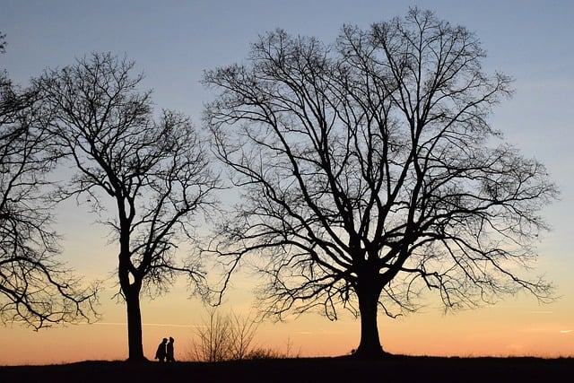
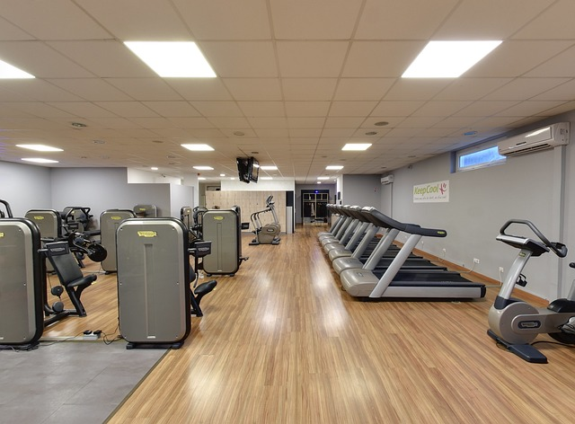

Hi, I’m William! I’m 22 years old and I love staying active. One of my favorite things to do is walk— I make sure to walk at least an hour every day. It’s a great way to clear my mind and enjoy the outdoors. Alongside walking, I also work out for at least 30 minutes daily. These two hobbies have not only helped me stay fit but have also contributed to my weight loss journey. Staying active is important to me, and I find joy in setting personal goals. Whether it’s hitting a new walking route or pushing myself a little harder in my workouts, I always strive for progress. When I’m not on the move, I love exploring new trails and discovering the beauty of nature. If you share a passion for walking or fitness, I’d love to connect!
 